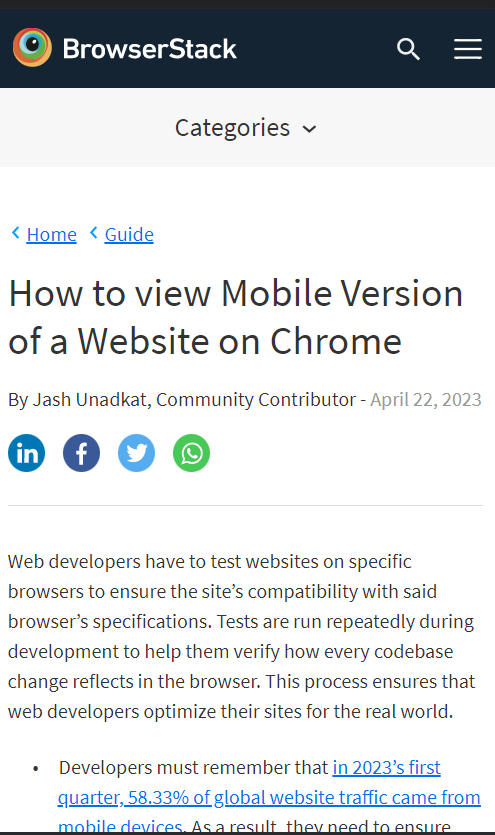

BrowserStack
The law of Fitt's Law states that the time required to click an element on the website should be the minimun possible, the website makes use of large buttons close to the middle of the page on the left side for the most important buttons necessary.